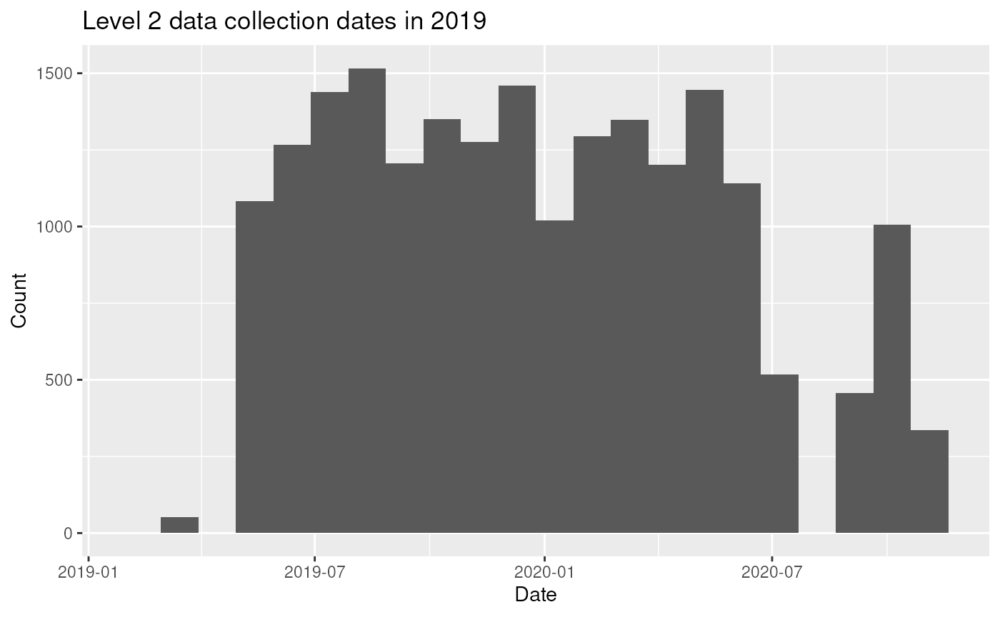
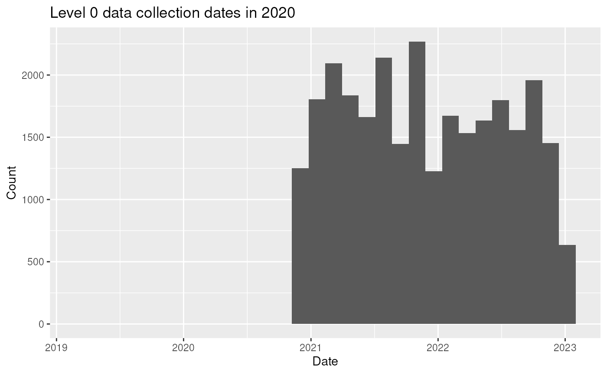

Preprocessing 2019 Health Status
preprocessing-2019-health-status.Rmd
library(MAHERYCohortHarmonization)
library(here)
#> here() starts at /net/rcstorenfs02/ifs/rc_labs/dominici_lab/lab/data_processing/csph_MDG-SurveyHarmonization/MAHERYCohortHarmonization
library(targets)
tar_load(dharma2019, store = here::here("_targets"))
# Load already included functions if relevant
pkgload::load_all(export_all = FALSE)
#> ℹ Loading MAHERYCohortHarmonization
library(janitor)
#>
#> Attaching package: 'janitor'
#> The following objects are masked from 'package:stats':
#>
#> chisq.test, fisher.test
library(dplyr)
#>
#> Attaching package: 'dplyr'
#> The following object is masked from 'package:testthat':
#>
#> matches
#> The following objects are masked from 'package:stats':
#>
#> filter, lag
#> The following objects are masked from 'package:base':
#>
#> intersect, setdiff, setequal, union
library(tidyr)
#>
#> Attaching package: 'tidyr'
#> The following object is masked from 'package:testthat':
#>
#> matches
library(lubridate)
#>
#> Attaching package: 'lubridate'
#> The following objects are masked from 'package:base':
#>
#> date, intersect, setdiff, union
library(skimr)
#>
#> Attaching package: 'skimr'
#> The following object is masked from 'package:testthat':
#>
#> matches
library(forcats)
library(stringr)
library(ggplot2)This notebooks deals with the 2019 file’s health data.
Let’s begin:
Level 1 Health Data
The data is organized into 2 levels, where level 1 is the individual baseline data, and level 2 is the follow up data.
Reading in the data
The data is read in from the targets pipeline, and is contained in
the dharma2019 object.
To get the same number of rows we rerun the same NA filtering as in the cohort 2019 notebook:
cohort_df <- dharma2019$`Level 1 Named`
# create household head name
household_df <- dharma2019$`Level 0 Named` %>%
select(fact_0_id, L0_q2_hh_name) %>%
rename(hh_head_name = L0_q2_hh_name) %>%
distinct() %>%
mutate(hh_head_name = na_if(hh_head_name,".")) %>%
filter(!is.na(hh_head_name))
# some na filtering
cohort_df %>%
fill(fact_0_id, .direction = "down") %>%
filter(!is.na(L1_q39_date)) %>%
filter(L1_q39_date != ".") %>%
filter(!is.na(L1_q1_name)) %>%
filter(L1_q1_name != ".") %>%
filter(!is.na(L1_q1_name)) %>%
filter(L1_q1_name != ".") %>%
filter(!is.na(L1_q8_gender)) %>%
filter(L1_q8_gender != ".") %>%
filter(!is.na(L1_q2_dob_year)) %>%
filter(L1_q2_dob_year != ".") %>%
#join household head name
left_join(household_df, by = "fact_0_id") -> cohort_2019_healthWe can use the data dictionary to see what columns are available.
dharma2019_dict <- dharma2019$`Data Dictionary`
dharma2019_dict %>%
fill(level, .direction = "down") -> dharma2019_dict
level_1_dict <- dharma2019_dict %>%
filter(level == 1)
level_1_dict
#> # A tibble: 118 × 6
#> level column_name description choice_code choice_name type
#> <dbl> <chr> <chr> <chr> <chr> <chr>
#> 1 1 q39_date Date . . Ques…
#> 2 1 q1_name Full name . . Ques…
#> 3 1 q167_hh Is the respondent t… 489 Yes Ques…
#> 4 1 NA NA 490 No Ques…
#> 5 1 q168_wife_husband_hh Is the respondent t… 491 Yes Ques…
#> 6 1 NA NA 492 No Ques…
#> 7 1 q8_gender Gender of the respo… 18 Male Ques…
#> 8 1 NA NA 19 Female Ques…
#> 9 1 q165_alive Is the respondent s… 487 Alive Ques…
#> 10 1 NA NA 488 Dead Ques…
#> # ℹ 108 more rows
level_1_dict <- dharma2019_dict %>%
filter(level == 1)
level_1_dict
#> # A tibble: 118 × 6
#> level column_name description choice_code choice_name type
#> <dbl> <chr> <chr> <chr> <chr> <chr>
#> 1 1 q39_date Date . . Ques…
#> 2 1 q1_name Full name . . Ques…
#> 3 1 q167_hh Is the respondent t… 489 Yes Ques…
#> 4 1 NA NA 490 No Ques…
#> 5 1 q168_wife_husband_hh Is the respondent t… 491 Yes Ques…
#> 6 1 NA NA 492 No Ques…
#> 7 1 q8_gender Gender of the respo… 18 Male Ques…
#> 8 1 NA NA 19 Female Ques…
#> 9 1 q165_alive Is the respondent s… 487 Alive Ques…
#> 10 1 NA NA 488 Dead Ques…
#> # ℹ 108 more rowsNow, to get the matching health columns for 2019, we match the 2018 health columns to the most relevant 2019 columns.
Health Care Access & Diagnoses
This section will align with the prior_health_care and
prior_diagnoses sections
cohort_2019_health %>%
select(L1_q16_visit_hosp_clinic) %>%
table()
#> L1_q16_visit_hosp_clinic
#> . IDK No Yes
#> 9 19 898 894
cohort_2019_health %>%
mutate(prior_health_care_clean = case_when(
L1_q16_visit_hosp_clinic == "Yes" ~ "Yes",
L1_q16_visit_hosp_clinic == "No" ~ "No",
L1_q16_visit_hosp_clinic == "IDK" ~ "Unknown",
TRUE ~ NA_character_
) %>% as.factor()) -> cohort_2019_health_We fortunately already have the diagnoses in wide format so we can work with that:
diagnoses <- level_1_dict %>%
fill(column_name, .direction = "down") %>%
filter(str_detect(column_name, "q17_diagnostic")) %>%
select(choice_name) %>%
pull(choice_name) %>%
make_clean_names() %>%
str_replace_all("vih", "hiv") %>%
str_c("diag_", ., "_clean")Now, we can rename the columns in the health table with these diagnoses:
ind_diagnoses <- names(cohort_2019_health_) %>%
str_detect("L1_q17_diagnostic") %>%
which()
names(cohort_2019_health_)[ind_diagnoses] <- diagnoses
# cohort_2019_health_ %>%
# mutate(across(contains("diag_"), ~ case_when(
# . == "." ~ NA,
# . == NA ~ NA
# ) %>% as.factor())) -> cohort_2019_health_
cohort_2019_health_%>%
select(contains("diag_")) %>%
glimpse()
#> Rows: 1,820
#> Columns: 21
#> $ diag_bacterial_pneunomia_clean <chr> …
#> $ diag_tuberculosis_clean <chr> …
#> $ diag_hiv_clean <chr> …
#> $ diag_measles_clean <chr> …
#> $ diag_severely_infected_wound_that_required_antibiotic_or_amputation_clean <chr> …
#> $ diag_stroke_clean <chr> …
#> $ diag_seizures_convulsions_clean <chr> …
#> $ diag_development_disorder_clean <chr> …
#> $ diag_blindness_clean <chr> …
#> $ diag_deafness_clean <chr> …
#> $ diag_hypertension_clean <chr> …
#> $ diag_cancer_clean <chr> …
#> $ diag_high_risk_pregnancy_clean <chr> …
#> $ diag_schitosomiasis_clean <chr> …
#> $ diag_intestinal_worms_clean <chr> …
#> $ diag_gonorrhea_clean <chr> …
#> $ diag_pelvic_inflammatory_disease_clean <chr> …
#> $ diag_no_diagnosis_clean <chr> …
#> $ diag_other_clean <chr> …
#> $ diag_i_dont_remember_clean <chr> …
#> $ diag_malaria_tdr_clean <chr> …Much easier! Now, we deal with the “other” diagnoses:
cohort_2019_health_ %>%
tabyl(L1_q18_other_diagnostic)
#> L1_q18_other_diagnostic n percent
#> "Cansera taminny nono" 1 0.0005494505
#> "Voatombokomby" 1 0.0005494505
#> . 1281 0.7038461538
#> 999 393 0.2159340659
#> 9999 15 0.0082417582
#> Ahijanana 1 0.0005494505
#> Ambaotraka 3 0.0016483516
#> Ambaotrakq 1 0.0005494505
#> Ambotraka 1 0.0005494505
#> Antady laila nitatarana, Rereho 1 0.0005494505
#> Areti maso 1 0.0005494505
#> Aretim bazana 1 0.0005494505
#> Aretimbazana 1 0.0005494505
#> Aretin doha 1 0.0005494505
#> Aretin tratra 1 0.0005494505
#> Aretin-kibo 2 0.0010989011
#> Aretin-tsofina 2 0.0010989011
#> Aretina Ambotraka 1 0.0005494505
#> Aretina ambotraka 1 0.0005494505
#> Be bonga 1 0.0005494505
#> Diabettes 1 0.0005494505
#> Emoragie 1 0.0005494505
#> Ernie 1 0.0005494505
#> Fanimaso 1 0.0005494505
#> Fanimaso sy vavony 1 0.0005494505
#> Fanimaso, Voa kilo 1 0.0005494505
#> Fanomaso 1 0.0005494505
#> Fatigue general 1 0.0005494505
#> Fivalanana 1 0.0005494505
#> Goatre 1 0.0005494505
#> Hernie 5 0.0027472527
#> Hoditra fotsy 1 0.0005494505
#> Jaunis 1 0.0005494505
#> Kista 1 0.0005494505
#> Mangidy 1 0.0005494505
#> Marary ambotraka 1 0.0005494505
#> Mary ambaotraka 1 0.0005494505
#> Maso 1 0.0005494505
#> Maso, vaotraka 1 0.0005494505
#> Mivalana 1 0.0005494505
#> Narary Adilana 1 0.0005494505
#> Narary Ambotraka 2 0.0010989011
#> Narary Vavony 1 0.0005494505
#> Narary Vazana 1 0.0005494505
#> Nify 1 0.0005494505
#> Nisatra 2 0.0010989011
#> Nisatra, Bilakagny 1 0.0005494505
#> Nisy fery taminy tanana 1 0.0005494505
#> Niteraka 2 0.0010989011
#> Nivalana 1 0.0005494505
#> Nivalana, Vazana 1 0.0005494505
#> Ozatra 1 0.0005494505
#> Pandusite,Maso 1 0.0005494505
#> Ra mivonto 1 0.0005494505
#> Rumatisme articulaire 1 0.0005494505
#> Sahanko 1 0.0005494505
#> Satra 2 0.0010989011
#> Satra sy sohiky 1 0.0005494505
#> Satra tarika 1 0.0005494505
#> Satra, Fivalanana 1 0.0005494505
#> Sesitsesika 1 0.0005494505
#> Sindriky 1 0.0005494505
#> Sohiky 5 0.0027472527
#> Soiky 2 0.0010989011
#> Solopiso 2 0.0010989011
#> Solopisy 1 0.0005494505
#> Tahaizana, Tadigny 1 0.0005494505
#> Tangiky 1 0.0005494505
#> Torantoragna 1 0.0005494505
#> Tratran accident 1 0.0005494505
#> Tsy ampy aigny 1 0.0005494505
#> Tsy ampy ra 1 0.0005494505
#> Vaotraka 8 0.0043956044
#> Vavony 3 0.0016483516
#> Vazana 2 0.0010989011
#> Voa Ratra 2 0.0010989011
#> Voa fery 2 0.0010989011
#> Voa kiso 2 0.0010989011
#> Voa ratra 3 0.0016483516
#> Voakaikitra amboa 2 0.0010989011
#> asaka maso 1 0.0005494505
#> kisoso 1 0.0005494505
#> loha 3 0.0016483516
#> loha, vaotraka 1 0.0005494505
#> loha, vazana 1 0.0005494505
#> marary ambaotraka 1 0.0005494505
#> sery 1 0.0005494505
#> sohiky 1 0.0005494505
#> torana 1 0.0005494505
#> torantirana 1 0.0005494505
#> vaotraka 5 0.0027472527
#> vaotraka, loha 2 0.0010989011
#> voa famaky 1 0.0005494505This will require some manual cleaning as well as the same strategy for cleaning the “other” diagnoses as we did in the 2018 notebook, using a translation lookup table.
We’ll leave this for now.
Level 2 Health Data
In addition to this, there are level 2 health data that is collected
for each individual multiple times per year. These are called
followups.
cohort_2019_anthro <- dharma2019$`Level 2 Named`
level_2_dict <- dharma2019_dict %>%
filter(level == 2)The level 2 data is collected at the following time points:
cohort_2019_anthro %>%
select(L2_q38_date_followup) %>%
mutate(date = L2_q38_date_followup %>%
na_if("\\.") %>%
as.numeric() %>%
convert_to_date()) %>%
select(date) %>%
ggplot(aes(x = date)) +
geom_histogram(binwidth = 30) +
labs(title = "Level 2 data collection dates in 2019", x = "Date", y = "Count")
#> Warning: There was 1 warning in `mutate()`.
#> ℹ In argument: `date = L2_q38_date_followup %>% na_if("\\.") %>% as.numeric()
#> %>% convert_to_date()`.
#> Caused by warning in `convert_to_datetime_helper()`:
#> ! NAs introduced by coercion
#> Warning: Removed 2728 rows containing non-finite outside the scale range
#> (`stat_bin()`).
As we can see, the data is supposed to correspond to a 2019 data collection window, but extends to almost the end of 2020.
Naively, we can check to see if people get multiple surveys:
cohort_2019_anthro %>%
fill(fact_1_id, .direction = "down") %>%
filter(!deleted) %>%
group_by(fact_1_id) %>%
summarise(n_surveys = n()) %>%
arrange(-n_surveys)
#> # A tibble: 1,755 × 2
#> fact_1_id n_surveys
#> <dbl> <int>
#> 1 8864710 19
#> 2 8861722 18
#> 3 8861723 18
#> 4 8861724 18
#> 5 8861743 18
#> 6 8861744 18
#> 7 8861745 18
#> 8 8861808 18
#> 9 8861809 18
#> 10 8861992 18
#> # ℹ 1,745 more rowsIt seems that an individual could have 20 entries in one file:
cohort_2019_anthro %>%
fill(fact_0_id, fact_1_id, .direction = "down") %>%
filter(!deleted) %>%
filter(fact_1_id == 8864710) %>%
mutate(date = L2_q38_date_followup %>%
na_if("\\.") %>%
as.numeric() %>%
convert_to_date()) %>%
select(date) %>% table()
#> Warning: There was 1 warning in `mutate()`.
#> ℹ In argument: `date = L2_q38_date_followup %>% na_if("\\.") %>% as.numeric()
#> %>% convert_to_date()`.
#> Caused by warning in `convert_to_datetime_helper()`:
#> ! NAs introduced by coercion
#> date
#> 2019-05-26 2019-06-28 2019-07-22 2019-08-13 2019-09-18 2019-10-27 2019-11-15
#> 1 1 2 1 1 1 1
#> 2019-12-15 2020-01-18 2020-02-16 2020-03-11 2020-04-28 2020-05-21 2020-06-29
#> 1 1 1 1 1 1 1
#> 2020-09-21 2020-10-12
#> 1 1Ok, it is encouraging that the dates are all different. This would mean that, for some people, they have multiple follow ups in the same year.
Let’s see how many follows ups the average person has:
cohort_2019_anthro %>%
fill(fact_0_id, fact_1_id, .direction = "down") %>%
filter(!deleted)
#> # A tibble: 22,757 × 1,252
#> fact_0_id fact_1_id fact_2_id L2_q38_date_followup L2_q41_alive
#> <dbl> <dbl> <dbl> <chr> <chr>
#> 1 8853944 8861217 8861231 . Yes
#> 2 8853944 8861218 8861233 43550 Yes
#> 3 8860274 8860332 8860369 43549 Yes
#> 4 8860274 8860332 9045306 43664 Yes
#> 5 8860274 8860341 8860370 43549 Yes
#> 6 8860274 8860341 9804982 43770 Yes
#> 7 8860274 8860346 8860375 43549 Yes
#> 8 8860274 8860346 9804981 43770 Yes
#> 9 8860274 8861243 8861264 43549 Yes
#> 10 8860274 8861248 8861265 43549 Yes
#> # ℹ 22,747 more rows
#> # ℹ 1,247 more variables: L2_q791_enumerator <chr>, L2_q46_present <chr>,
#> # L2_q398_not_in_town <chr>, L2_q804_not_in_town1.000 <chr>,
#> # L2_q804_not_in_town1.001 <chr>, L2_q804_not_in_town1.002 <chr>,
#> # L2_q804_not_in_town1.003 <chr>, L2_q804_not_in_town1.004 <chr>,
#> # L2_q804_not_in_town1.005 <chr>, L2_q804_not_in_town1.006 <chr>,
#> # L2_q804_not_in_town1.007 <chr>, L2_q804_not_in_town1.008 <chr>, …Ok, with that known, we can preprocess these anthro entries. We know that each individual can have multiple entries, so we need to remove the deleted entries and then order each individual by date to know which follow up is which:
cohort_2019_anthro %>%
fill(fact_0_id, fact_1_id, .direction = "down") %>%
filter(!deleted) %>%
filter(L2_q38_date_followup != ".") %>%
mutate(date_clean = L2_q38_date_followup %>%
na_if("\\.") %>%
as.numeric() %>%
convert_to_date()) -> cohort_2019_anthro_Demographics
First, we look at the demographics within follow ups.
The status of the individual is first:
cohort_2019_anthro_ %>%
select(fact_1_id, L2_q41_alive) %>%
tabyl(L2_q41_alive)
#> L2_q41_alive n percent
#> . 3 0.0001481481
#> No 41 0.0020246914
#> Yes 20206 0.9978271605
cohort_2019_anthro_ %>%
tabyl(L2_q47_participate)
#> L2_q47_participate n percent
#> . 5388 0.2660740741
#> No 9 0.0004444444
#> Yes 14853 0.7334814815
cohort_2019_anthro_ %>%
tabyl(L2_q46_present)
#> L2_q46_present n percent
#> . 11 0.0005432099
#> No 5403 0.2668148148
#> Yes 14836 0.7326419753This filters out the individuals who are not alive, not participating, or not present.
Maternal Health
Now we look at recent pregnancies:
cohort_2019_anthro_ %>%
select(fact_1_id, L2_q196_live_birth) %>%
tabyl(L2_q196_live_birth)
#> L2_q196_live_birth n percent
#> . 10911 0.73568876
#> No 3860 0.26026566
#> Yes 60 0.0040455860 individuals is enough to keep around:
cohort_2019_anthro_ %>%
mutate(recent_birth_clean = case_when(
L2_q196_live_birth == "Yes" ~ TRUE,
L2_q196_live_birth == "No" ~ FALSE,
L2_q196_live_birth == "." ~ NA,
TRUE ~ NA
) %>% as.factor()) -> cohort_2019_anthro_If they are currently pregnant:
cohort_2019_anthro_ %>%
select(fact_1_id, L2_q200_pregnant_now) %>%
tabyl(L2_q200_pregnant_now)
#> L2_q200_pregnant_now n percent
#> . 10965 0.73932978
#> No 3653 0.24630841
#> Yes 213 0.01436181That’s a large number of individuals who are pregnant, so we can keep this column as well:
cohort_2019_anthro_ %>%
mutate(pregnant_now_clean = case_when(
L2_q200_pregnant_now == "Yes" ~ TRUE,
L2_q200_pregnant_now == "No" ~ FALSE,
L2_q200_pregnant_now == "." ~ NA,
TRUE ~ NA
) %>% as.factor()) -> cohort_2019_anthro_The other pregnancy columns do not seem to be relevant for analysis, but we may include them later.
Diagnoses
Recent diagnoses are collected here as well. We’re going to use the lookup table from the 2018 data to rename the columns:
diagnoses <- level_2_dict %>%
fill(column_name, .direction = "down") %>%
filter(str_detect(column_name, "q62_diagnostic")) %>%
mutate(raw = make_clean_names(choice_name)) %>%
select(raw) %>%
left_join(malagasy_diagnosis_lookup_table) %>%
pull(diagnosis_english) %>%
str_c("diag_", ., "_clean")
#> Joining with `by = join_by(raw)`
ind_diagnoses <- names(cohort_2019_anthro_) %>%
str_detect("q62_diagnostic") %>%
which()
names(cohort_2019_anthro_)[ind_diagnoses] <- diagnosesHere’s a specific diagnosis we want to single out: Malaria (called RDT in Malagasy):
cohort_2019_anthro_ %>%
select(L2_q226_rdt_test, L2_q227_rdt_result) %>%
table()
#> L2_q227_rdt_result
#> L2_q226_rdt_test . Negative Positive
#> . 13955 0 0
#> No 701 1 0
#> Yes 1 113 60We can replace whenever we have malaria diagnosis with the results of the RDT test:
Symptoms
We can process the set of specific symptoms next:
cohort_2019_anthro_ %>%
#diarrhea
mutate(symptom15dys_diarrhea_clean = case_when(
L2_q94_diarrhea_now_15days == "Yes" ~ TRUE,
L2_q94_diarrhea_now_15days == "No" ~ FALSE,
L2_q94_diarrhea_now_15days == "." ~ NA,
TRUE ~ NA
) %>% as.factor()) %>%
#fever
mutate(symptom15dys_fever_clean = case_when(
L2_q117_fever_now_15days == "Yes" ~ TRUE,
L2_q117_fever_now_15days == "No" ~ FALSE,
L2_q117_fever_now_15days == "." ~ NA,
TRUE ~ NA
) %>% as.factor()) %>%
# emesis
mutate(symptom15dys_vomit_clean = case_when(
L2_q137_vomit_now_15days == "Yes" ~ TRUE,
L2_q137_vomit_now_15days == "No" ~ FALSE,
L2_q137_vomit_now_15days == "." ~ NA,
TRUE ~ NA
) %>% as.factor()) %>%
# headache
mutate(symptom15dys_headache_clean = case_when(
L2_q236_headache_15days == "Yes" ~ TRUE,
L2_q236_headache_15days == "No" ~ FALSE,
L2_q236_headache_15days == "." ~ NA,
TRUE ~ NA
) %>% as.factor()) -> cohort_2019_anthro_Structure
We will add a function to show us what the time frame of a specific person’s follow up is:
cohort_2019_anthro_ %>%
mutate(uuid_clean = fact_1_id) %>%
group_by(uuid_clean) %>%
arrange(uuid_clean, date_clean) %>%
mutate(followup_number_clean = row_number()) %>%
ungroup() %>%
mutate(across(contains("diag_"), ~ case_when(
. == "." ~ NA,
is.na(.) ~ NA,
TRUE ~ TRUE
) %>% as.factor())) %>%
rename(village_clean = L2_q791_enumerator) %>%
select(contains('clean')) %>%
select(-contains("L2")) %>%
select(uuid_clean, followup_number_clean, date_clean, village_clean, everything()) -> x
skimr::skim(x)| Name | x |
| Number of rows | 14831 |
| Number of columns | 31 |
| _______________________ | |
| Column type frequency: | |
| character | 1 |
| Date | 1 |
| factor | 27 |
| numeric | 2 |
| ________________________ | |
| Group variables | None |
Variable type: character
| skim_variable | n_missing | complete_rate | min | max | empty | n_unique | whitespace |
|---|---|---|---|---|---|---|---|
| village_clean | 0 | 1 | 1 | 22 | 0 | 7 | 0 |
Variable type: Date
| skim_variable | n_missing | complete_rate | min | max | median | n_unique |
|---|---|---|---|---|---|---|
| date_clean | 0 | 1 | 2019-03-25 | 2020-10-27 | 2019-12-09 | 349 |
Variable type: factor
| skim_variable | n_missing | complete_rate | ordered | n_unique | top_counts |
|---|---|---|---|---|---|
| diag_malaria_rdt_positive_clean | 14657 | 0.01 | FALSE | 1 | TRU: 174 |
| diag_pneumonia_clean | 14831 | 0.00 | FALSE | 0 | : |
| diag_cough_or_tuberculosis_clean | 14830 | 0.00 | FALSE | 1 | TRU: 1 |
| diag_hiv_clean | 14831 | 0.00 | FALSE | 0 | : |
| diag_measles_or_whooping_cough_clean | 14831 | 0.00 | FALSE | 0 | : |
| diag_abscess_needs_antibiotic_or_amputation_clean | 14790 | 0.00 | FALSE | 1 | TRU: 41 |
| diag_stroke_clean | 14831 | 0.00 | FALSE | 0 | : |
| diag_seizure_clean | 14812 | 0.00 | FALSE | 1 | TRU: 19 |
| diag_growth_problem_clean | 14831 | 0.00 | FALSE | 0 | : |
| diag_blindness_clean | 14826 | 0.00 | FALSE | 1 | TRU: 5 |
| diag_hearing_problem_eardrum_clean | 14828 | 0.00 | FALSE | 1 | TRU: 3 |
| diag_hypertension_clean | 14831 | 0.00 | FALSE | 0 | : |
| diag_cancer_clean | 14829 | 0.00 | FALSE | 1 | TRU: 2 |
| diag_pregnancy_complication_clean | 14537 | 0.02 | FALSE | 1 | TRU: 294 |
| diag_bilharzia_clean | 14827 | 0.00 | FALSE | 1 | TRU: 4 |
| diag_intestinal_worms_clean | 14721 | 0.01 | FALSE | 1 | TRU: 110 |
| diag_syphilis_sti_clean | 14831 | 0.00 | FALSE | 0 | : |
| diag_sexually_transmitted_infection_clean | 14830 | 0.00 | FALSE | 1 | TRU: 1 |
| diag_no_illness_clean | 14831 | 0.00 | FALSE | 0 | : |
| diag_other_clean | 14824 | 0.00 | FALSE | 1 | TRU: 7 |
| diag_not_remembered_clean | 14829 | 0.00 | FALSE | 1 | TRU: 2 |
| recent_birth_clean | 10911 | 0.26 | FALSE | 2 | FAL: 3860, TRU: 60 |
| pregnant_now_clean | 10965 | 0.26 | FALSE | 2 | FAL: 3653, TRU: 213 |
| symptom15dys_diarrhea_clean | 27 | 1.00 | FALSE | 2 | FAL: 14457, TRU: 347 |
| symptom15dys_fever_clean | 44 | 1.00 | FALSE | 2 | FAL: 13847, TRU: 940 |
| symptom15dys_vomit_clean | 46 | 1.00 | FALSE | 2 | FAL: 14718, TRU: 67 |
| symptom15dys_headache_clean | 53 | 1.00 | FALSE | 2 | FAL: 13869, TRU: 909 |
Variable type: numeric
| skim_variable | n_missing | complete_rate | mean | sd | p0 | p25 | p50 | p75 | p100 | hist |
|---|---|---|---|---|---|---|---|---|---|---|
| uuid_clean | 0 | 1 | 8911941.11 | 132386.14 | 8860332 | 8864216 | 8871977 | 8888542 | 9954348 | ▇▁▁▁▁ |
| followup_number_clean | 0 | 1 | 5.95 | 3.72 | 1 | 3 | 5 | 9 | 16 | ▇▅▃▂▁ |
preprocess_rdp_health_subset2019
This function will preprocess a subset of the RDP health data for 2019.
preprocess_rdp_health_subset2020
Similar to above, we can define a function to preprocess the 2020 health followups.
It looks like the 2020 data has a similar structure to the 2019 data,
so we can use a similar approach. Confusingly, it uses L0
as the prefix, which has usually been reserved for household-level data.
However, we can see in the names that
fact_1_id is the individual identifier, and the date column
is L0_q38_date_followup.
So this must be a follow up file.
cohort_2020_anthro <- dharma2020
names(cohort_2020_anthro) %>%
str_subset("date") %>%
sort()
#> [1] "L0_q38_date_followup" "L0_q822_date_death" "last_updated_by"
#> [4] "time_updated" "updated_by_group" "updated_by_site"
#> [7] "updated_by_team"So what we need to find are the same health columns from 2019, but in 2020. Do the same number of surveys per person exist?:
cohort_2020_anthro %>%
filter(!deleted) %>%
filter(L0_q856_unique_id_if_unable_to_select_from_dropdown_above != ".") %>%
group_by(L0_q856_unique_id_if_unable_to_select_from_dropdown_above) %>%
summarise(n_surveys = n()) %>%
arrange(-n_surveys)
#> # A tibble: 2,273 × 2
#> L0_q856_unique_id_if_unable_to_select_from_dropdown_above n_surveys
#> <chr> <int>
#> 1 A1 6
#> 2 10004792 3
#> 3 10004799 3
#> 4 10004905 3
#> 5 10005044 3
#> 6 10005336 3
#> 7 10005416 3
#> 8 10005769 3
#> 9 10005967 3
#> 10 10005968 3
#> # ℹ 2,263 more rowsIt looks like each person has only one followup survey, but there are some with 6.
We need to be sure we are selecting the right identifier. Let’s look at the columns with a valid name, and the column where they select a name from the drop down:
Individuals with a name and ID number:
cohort_2020_anthro %>%
select(name = L0_q813_who_are_you_following_up_with_individual_id, id = L0_q856_unique_id_if_unable_to_select_from_dropdown_above) %>%
# remove rows where there is neither a name or id
filter(name != "." & id != ".") %>%
group_by(name, id) %>%
summarise(n = n()) %>%
arrange(-n) %>% summary()
#> `summarise()` has grouped output by 'name'. You can override using the
#> `.groups` argument.
#> name id n
#> Length:811 Length:811 Min. :1.000
#> Class :character Class :character 1st Qu.:1.000
#> Mode :character Mode :character Median :1.000
#> Mean :1.032
#> 3rd Qu.:1.000
#> Max. :2.000Over 800 cases, the vast majority of whom have only 1 count.
Individuals with a name but no ID:
cohort_2020_anthro %>%
select(name = L0_q813_who_are_you_following_up_with_individual_id, id = L0_q856_unique_id_if_unable_to_select_from_dropdown_above) %>%
# remove rows where there is a name but no id
filter(name != "." & id == ".") %>%
group_by(name, id) %>%
summarise(n = n()) %>%
arrange(-n) %>% summary()
#> `summarise()` has grouped output by 'name'. You can override using the
#> `.groups` argument.
#> name id n
#> Length:1830 Length:1830 Min. : 1.00
#> Class :character Class :character 1st Qu.: 7.00
#> Mode :character Mode :character Median :14.00
#> Mean :13.28
#> 3rd Qu.:21.00
#> Max. :27.00Over 1830 cases, and the vast majority have over 14 entries. This is the group we should be using as the “correct” data.
Individuals with no name but an ID:
cohort_2020_anthro %>%
select(name = L0_q813_who_are_you_following_up_with_individual_id, id = L0_q856_unique_id_if_unable_to_select_from_dropdown_above,) %>%
# remove rows where there is no name but there is an id
filter(name == "." & id != ".") %>%
group_by(name, id) %>%
summarise(n = n()) %>%
arrange(-n) %>% summary()
#> `summarise()` has grouped output by 'name'. You can override using the
#> `.groups` argument.
#> name id n
#> Length:1904 Length:1904 Min. :1.000
#> Class :character Class :character 1st Qu.:1.000
#> Mode :character Mode :character Median :2.000
#> Mean :1.612
#> 3rd Qu.:2.000
#> Max. :7.0001900 cases, with the median number of entries as 2.
If someone has no name but does have an ID, can we find them in the set that has both a name and an ID?
cohort_2020_anthro %>%
select(name = L0_q813_who_are_you_following_up_with_individual_id, id = L0_q856_unique_id_if_unable_to_select_from_dropdown_above) %>%
# remove rows where there is no name but there is an id
filter(name == "." & id != ".") %>%
left_join(
cohort_2020_anthro %>%
select(name = L0_q813_who_are_you_following_up_with_individual_id, id = L0_q856_unique_id_if_unable_to_select_from_dropdown_above,) %>%
# remove rows where there is neither a name or id
filter(name != "." & id != ".") %>%
distinct(),
by = "id"
) %>%
filter(!is.na(name.y)) %>%
group_by(name.x, id, name.y) %>%
summarise(n = n()) %>%
arrange(-n)
#> `summarise()` has grouped output by 'name.x', 'id'. You can override using the
#> `.groups` argument.
#> # A tibble: 8 × 4
#> # Groups: name.x, id [8]
#> name.x id name.y n
#> <chr> <chr> <chr> <int>
#> 1 . 4771 Rivo (ANTARAVATO)_Eddy l_Edience_2016_Female 1
#> 2 . 4978 Rivo (ANTARAVATO)_Christophe_Jean Lucianot_2015_Male 1
#> 3 . 5329 Barthélémie (VINANIBE)_Lalahy Zandry_Floriette_1984_Female 1
#> 4 . 5533 Saufiel (ANTARAVATO)_Razafindraimon Marchelin_Razafimalala… 1
#> 5 . 5621 Rivo (ANTARAVATO)_Vastelin_Vastelin_1994_Male 1
#> 6 . 6305 Adolphe (VINANIBE)_Velonjara Berto_Laurancia_2012_Female 1
#> 7 . 6307 Adolphe (VINANIBE)_Velonjara Berto_Razafindratiana Jessick… 1
#> 8 . 6421 Adolphe (VINANIBE)_Razafindrazaka Bay Charles Justin_MARIE… 1These 8 IDs appear twice — first they have an ID but no name, and in another follow up they have both an ID and a name. This means that it is extremely rare that someone has a follow up where they did not select the right name.
This means that people who have a name and an ID are the most reliable, and people with a name and no ID are the next most reliable. People with no name but an ID are the least reliable, and should likely be removed. How much data would we lose?
cohort_2020_anthro %>%
select(name = L0_q813_who_are_you_following_up_with_individual_id, id = L0_q856_unique_id_if_unable_to_select_from_dropdown_above,) %>%
# remove rows where there is no name but there is an id
filter(name == "." & id != ".") -> no_name
nrow(no_name) / nrow(cohort_2020_anthro)
#> [1] 0.1053499About 10%, this is acceptable.
Below we confirm that this dataset continues the follow ups from 2021 (the end of our 2019 dataset) onwards:
cohort_2020_anthro %>%
select(L0_q38_date_followup) %>%
mutate(date = L0_q38_date_followup %>%
na_if("\\.") %>%
# as.numeric() %>%
dmy_hms()) %>%
select(date) %>%
ggplot(aes(x = date)) +
geom_histogram() +
labs(title = "Level 0 data collection dates in 2020", x = "Date", y = "Count")
#> Warning: There was 1 warning in `mutate()`.
#> ℹ In argument: `date = L0_q38_date_followup %>% na_if("\\.") %>% dmy_hms()`.
#> Caused by warning:
#> ! 1163 failed to parse.
#> `stat_bin()` using `bins = 30`. Pick better value with `binwidth`.
#> Warning: Removed 1163 rows containing non-finite outside the scale range
#> (`stat_bin()`).
Ok, so now we know the basic first filters: we remove deleted entries, as well as entries with no name. Then we’ll additionally create a unique ID for each individual by combining the name and ID columns.
cohort_2020_anthro %>%
filter(!deleted) %>%
filter(L0_q813_who_are_you_following_up_with_individual_id != ".") %>%
filter(L0_q38_date_followup != ".") %>%
mutate(uuid_clean = str_c(
L0_q813_who_are_you_following_up_with_individual_id,
L0_q856_unique_id_if_unable_to_select_from_dropdown_above,
sep = "_")) %>%
filter(uuid_clean != "._") %>%
rowwise() %>%
mutate(uuid_clean = generate_uid(salt=Sys.getenv("UUID_SALT"), uuid_clean)) %>%
ungroup() -> cohort_2020_anthro_With that done, we can now select the same health columns as in 2019.
names(cohort_2019_anthro_) %>% str_remove("L2_") -> names_2019
names(cohort_2020_anthro_) %>% str_remove("L0_") -> names_2020
names_2020[names_2020 %in% names_2019]
#> [1] "fact_0_id"
#> [2] "q38_date_followup"
#> [3] "q791_enumerator"
#> [4] "q41_alive"
#> [5] "q46_present"
#> [6] "q804_not_in_town1.000"
#> [7] "q804_not_in_town1.001"
#> [8] "q804_not_in_town1.002"
#> [9] "q804_not_in_town1.003"
#> [10] "q804_not_in_town1.004"
#> [11] "q804_not_in_town1.005"
#> [12] "q804_not_in_town1.006"
#> [13] "q804_not_in_town1.007"
#> [14] "q804_not_in_town1.008"
#> [15] "q804_not_in_town1.009"
#> [16] "q804_not_in_town1.010"
#> [17] "q804_not_in_town1.011"
#> [18] "q806_not_in_town1_other"
#> [19] "q805_move_new_household"
#> [20] "q47_participate"
#> [21] "q48_reason_not_participate.000"
#> [22] "q48_reason_not_participate.001"
#> [23] "q48_reason_not_participate.002"
#> [24] "q48_reason_not_participate.003"
#> [25] "q48_reason_not_participate.004"
#> [26] "q48_reason_not_participate.005"
#> [27] "q196_live_birth"
#> [28] "q198_delivery_place"
#> [29] "q199_other_place_delivery"
#> [30] "q197_tears_baby"
#> [31] "q216_breastfeeding_now"
#> [32] "q494_breastfeeding_time"
#> [33] "q217_breastfeeding_food"
#> [34] "q200_pregnant_now"
#> [35] "q808_mijono_days"
#> [36] "q809_visit_other_villages"
#> [37] "q810_receive_guests"
#> [38] "q54_seek_treatment"
#> [39] "q56_where_seek_treatment.000"
#> [40] "q56_where_seek_treatment.001"
#> [41] "q56_where_seek_treatment.002"
#> [42] "q56_where_seek_treatment.003"
#> [43] "q56_where_seek_treatment.004"
#> [44] "q56_where_seek_treatment.005"
#> [45] "q56_where_seek_treatment.006"
#> [46] "q61_other_place_treatment"
#> [47] "q792_other_illnesses"
#> [48] "q94_diarrhea_now_15days"
#> [49] "q95_diarrhea_days"
#> [50] "q96_seek_treatment_diarrhea"
#> [51] "q97_place_treat_diarrhea.000"
#> [52] "q97_place_treat_diarrhea.001"
#> [53] "q97_place_treat_diarrhea.002"
#> [54] "q97_place_treat_diarrhea.003"
#> [55] "q97_place_treat_diarrhea.004"
#> [56] "q97_place_treat_diarrhea.005"
#> [57] "q97_place_treat_diarrhea.006"
#> [58] "q97_place_treat_diarrhea.007"
#> [59] "q97_place_treat_diarrhea.008"
#> [60] "q98_other_place_diarrhea"
#> [61] "q143_take_med_diarrhea"
#> [62] "q173_diarrhea_med.000"
#> [63] "q173_diarrhea_med.001"
#> [64] "q173_diarrhea_med.002"
#> [65] "q173_diarrhea_med.003"
#> [66] "q173_diarrhea_med.004"
#> [67] "q173_diarrhea_med.005"
#> [68] "q173_diarrhea_med.006"
#> [69] "q173_diarrhea_med.007"
#> [70] "q173_diarrhea_med.008"
#> [71] "q173_diarrhea_med.009"
#> [72] "q173_diarrhea_med.010"
#> [73] "q173_diarrhea_med.011"
#> [74] "q173_diarrhea_med.012"
#> [75] "q173_diarrhea_med.013"
#> [76] "q173_diarrhea_med.014"
#> [77] "q173_diarrhea_med.015"
#> [78] "q173_diarrhea_med.016"
#> [79] "q173_diarrhea_med.017"
#> [80] "q173_diarrhea_med.018"
#> [81] "q173_diarrhea_med.019"
#> [82] "q173_diarrhea_med.020"
#> [83] "q173_diarrhea_med.021"
#> [84] "q173_diarrhea_med.022"
#> [85] "q173_diarrhea_med.023"
#> [86] "q173_diarrhea_med.024"
#> [87] "q173_diarrhea_med.025"
#> [88] "q173_diarrhea_med.026"
#> [89] "q173_diarrhea_med.027"
#> [90] "q173_diarrhea_med.028"
#> [91] "q173_diarrhea_med.029"
#> [92] "q173_diarrhea_med.030"
#> [93] "q173_diarrhea_med.031"
#> [94] "q173_diarrhea_med.032"
#> [95] "q173_diarrhea_med.033"
#> [96] "q175_other_diar_med"
#> [97] "q174_trad_diar_med"
#> [98] "q105_diarrhea_resolved"
#> [99] "q111_black_stool"
#> [100] "q112_bloody_streal_stool"
#> [101] "q114_dry_month_saliva_thick_white"
#> [102] "q115_sunken_eyes"
#> [103] "q117_fever_now_15days"
#> [104] "q118_fever_days"
#> [105] "q148_seek_treatment_fever"
#> [106] "q119_place_seek_treatment_fever.000"
#> [107] "q119_place_seek_treatment_fever.001"
#> [108] "q119_place_seek_treatment_fever.002"
#> [109] "q119_place_seek_treatment_fever.003"
#> [110] "q119_place_seek_treatment_fever.004"
#> [111] "q119_place_seek_treatment_fever.005"
#> [112] "q119_place_seek_treatment_fever.006"
#> [113] "q119_place_seek_treatment_fever.007"
#> [114] "q119_place_seek_treatment_fever.008"
#> [115] "q228_other_place_fever"
#> [116] "q226_rdt_test"
#> [117] "q227_rdt_result"
#> [118] "q400_temp_tdr"
#> [119] "q188_take_med_vomit"
#> [120] "q230_fever_med.000"
#> [121] "q230_fever_med.001"
#> [122] "q230_fever_med.002"
#> [123] "q230_fever_med.003"
#> [124] "q230_fever_med.004"
#> [125] "q230_fever_med.005"
#> [126] "q230_fever_med.006"
#> [127] "q230_fever_med.007"
#> [128] "q230_fever_med.008"
#> [129] "q230_fever_med.009"
#> [130] "q230_fever_med.010"
#> [131] "q230_fever_med.011"
#> [132] "q230_fever_med.012"
#> [133] "q230_fever_med.013"
#> [134] "q230_fever_med.014"
#> [135] "q230_fever_med.015"
#> [136] "q230_fever_med.016"
#> [137] "q230_fever_med.017"
#> [138] "q230_fever_med.018"
#> [139] "q230_fever_med.019"
#> [140] "q230_fever_med.020"
#> [141] "q230_fever_med.021"
#> [142] "q230_fever_med.022"
#> [143] "q230_fever_med.023"
#> [144] "q230_fever_med.024"
#> [145] "q230_fever_med.025"
#> [146] "q230_fever_med.026"
#> [147] "q230_fever_med.027"
#> [148] "q230_fever_med.028"
#> [149] "q230_fever_med.029"
#> [150] "q230_fever_med.030"
#> [151] "q230_fever_med.031"
#> [152] "q230_fever_med.032"
#> [153] "q230_fever_med.033"
#> [154] "q232_other_med_fev"
#> [155] "q231_trad_med_fever"
#> [156] "q233_fever_resolved"
#> [157] "q137_vomit_now_15days"
#> [158] "q138_seek_treatment_vomit"
#> [159] "q147_place_seek_treatment_vomit.000"
#> [160] "q147_place_seek_treatment_vomit.001"
#> [161] "q147_place_seek_treatment_vomit.002"
#> [162] "q147_place_seek_treatment_vomit.003"
#> [163] "q147_place_seek_treatment_vomit.004"
#> [164] "q147_place_seek_treatment_vomit.005"
#> [165] "q147_place_seek_treatment_vomit.006"
#> [166] "q147_place_seek_treatment_vomit.007"
#> [167] "q147_place_seek_treatment_vomit.008"
#> [168] "q151_other_place_vomitting"
#> [169] "q242_take_med_vomit"
#> [170] "q244_vomit_med.000"
#> [171] "q244_vomit_med.001"
#> [172] "q244_vomit_med.002"
#> [173] "q244_vomit_med.003"
#> [174] "q244_vomit_med.004"
#> [175] "q244_vomit_med.005"
#> [176] "q244_vomit_med.006"
#> [177] "q244_vomit_med.007"
#> [178] "q244_vomit_med.008"
#> [179] "q244_vomit_med.009"
#> [180] "q244_vomit_med.010"
#> [181] "q244_vomit_med.011"
#> [182] "q244_vomit_med.012"
#> [183] "q244_vomit_med.013"
#> [184] "q244_vomit_med.014"
#> [185] "q244_vomit_med.015"
#> [186] "q244_vomit_med.016"
#> [187] "q244_vomit_med.017"
#> [188] "q244_vomit_med.018"
#> [189] "q244_vomit_med.019"
#> [190] "q244_vomit_med.020"
#> [191] "q244_vomit_med.021"
#> [192] "q244_vomit_med.022"
#> [193] "q244_vomit_med.023"
#> [194] "q244_vomit_med.024"
#> [195] "q244_vomit_med.025"
#> [196] "q244_vomit_med.026"
#> [197] "q244_vomit_med.027"
#> [198] "q244_vomit_med.028"
#> [199] "q244_vomit_med.029"
#> [200] "q244_vomit_med.030"
#> [201] "q244_vomit_med.031"
#> [202] "q244_vomit_med.032"
#> [203] "q244_vomit_med.033"
#> [204] "q246_other_med_vomiting"
#> [205] "q245_trad_med_vomitting"
#> [206] "q163_vomit_resolved"
#> [207] "q236_headache_15days"
#> [208] "q237_seek_treat_fever"
#> [209] "q239_place_seek_treat_headache.000"
#> [210] "q239_place_seek_treat_headache.001"
#> [211] "q239_place_seek_treat_headache.002"
#> [212] "q239_place_seek_treat_headache.003"
#> [213] "q239_place_seek_treat_headache.004"
#> [214] "q239_place_seek_treat_headache.005"
#> [215] "q239_place_seek_treat_headache.006"
#> [216] "q239_place_seek_treat_headache.007"
#> [217] "q239_place_seek_treat_headache.008"
#> [218] "q240_other_place_treat_headache"
#> [219] "q249_take_med_headache"
#> [220] "q248_headache_med.000"
#> [221] "q248_headache_med.001"
#> [222] "q248_headache_med.002"
#> [223] "q248_headache_med.003"
#> [224] "q248_headache_med.004"
#> [225] "q248_headache_med.005"
#> [226] "q248_headache_med.006"
#> [227] "q248_headache_med.007"
#> [228] "q248_headache_med.008"
#> [229] "q248_headache_med.009"
#> [230] "q248_headache_med.010"
#> [231] "q248_headache_med.011"
#> [232] "q248_headache_med.012"
#> [233] "q248_headache_med.013"
#> [234] "q248_headache_med.014"
#> [235] "q248_headache_med.015"
#> [236] "q248_headache_med.016"
#> [237] "q248_headache_med.017"
#> [238] "q248_headache_med.018"
#> [239] "q248_headache_med.019"
#> [240] "q248_headache_med.020"
#> [241] "q248_headache_med.021"
#> [242] "q248_headache_med.022"
#> [243] "q248_headache_med.023"
#> [244] "q248_headache_med.024"
#> [245] "q248_headache_med.025"
#> [246] "q248_headache_med.026"
#> [247] "q248_headache_med.027"
#> [248] "q248_headache_med.028"
#> [249] "q248_headache_med.029"
#> [250] "q248_headache_med.030"
#> [251] "q248_headache_med.031"
#> [252] "q248_headache_med.032"
#> [253] "q248_headache_med.033"
#> [254] "q252_other_headache_med"
#> [255] "q251_trad_med_headache"
#> [256] "q265_headache_resolved"
#> [257] "q270_burning_urination"
#> [258] "q269_pus_genital"
#> [259] "q271_difficulty_urinating"
#> [260] "q390_sti"
#> [261] "q254_seek_treat_sti"
#> [262] "q256_place_seek_treat_sti.000"
#> [263] "q256_place_seek_treat_sti.001"
#> [264] "q256_place_seek_treat_sti.002"
#> [265] "q256_place_seek_treat_sti.003"
#> [266] "q256_place_seek_treat_sti.004"
#> [267] "q256_place_seek_treat_sti.005"
#> [268] "q256_place_seek_treat_sti.006"
#> [269] "q256_place_seek_treat_sti.007"
#> [270] "q256_place_seek_treat_sti.008"
#> [271] "q257_other_place_treat_sti"
#> [272] "q259_take_med_sti"
#> [273] "q261_sti_med.000"
#> [274] "q261_sti_med.001"
#> [275] "q261_sti_med.002"
#> [276] "q261_sti_med.003"
#> [277] "q261_sti_med.004"
#> [278] "q261_sti_med.005"
#> [279] "q261_sti_med.006"
#> [280] "q261_sti_med.007"
#> [281] "q261_sti_med.008"
#> [282] "q261_sti_med.009"
#> [283] "q261_sti_med.010"
#> [284] "q261_sti_med.011"
#> [285] "q261_sti_med.012"
#> [286] "q261_sti_med.013"
#> [287] "q261_sti_med.014"
#> [288] "q261_sti_med.015"
#> [289] "q261_sti_med.016"
#> [290] "q261_sti_med.017"
#> [291] "q261_sti_med.018"
#> [292] "q261_sti_med.019"
#> [293] "q261_sti_med.020"
#> [294] "q261_sti_med.021"
#> [295] "q261_sti_med.022"
#> [296] "q261_sti_med.023"
#> [297] "q261_sti_med.024"
#> [298] "q261_sti_med.025"
#> [299] "q261_sti_med.026"
#> [300] "q261_sti_med.027"
#> [301] "q261_sti_med.028"
#> [302] "q261_sti_med.029"
#> [303] "q261_sti_med.030"
#> [304] "q261_sti_med.031"
#> [305] "q261_sti_med.032"
#> [306] "q261_sti_med.033"
#> [307] "q263_other_sti_med"
#> [308] "q262_trad_med_sti"
#> [309] "q264_sti_resolved"
#> [310] "q266_animal_bite_31days"
#> [311] "q267_story_bite_animal"
#> [312] "q268_rat_feces_contact"
#> [313] "q272_measles"
#> [314] "q274_seek_treat_measles"
#> [315] "q276_place_seek_treat_measles.000"
#> [316] "q276_place_seek_treat_measles.001"
#> [317] "q276_place_seek_treat_measles.002"
#> [318] "q276_place_seek_treat_measles.003"
#> [319] "q276_place_seek_treat_measles.004"
#> [320] "q276_place_seek_treat_measles.005"
#> [321] "q276_place_seek_treat_measles.006"
#> [322] "q276_place_seek_treat_measles.007"
#> [323] "q276_place_seek_treat_measles.008"
#> [324] "q276_place_seek_treat_measles.009"
#> [325] "q277_other_place_treat_measles"
#> [326] "q280_take_med_measles"
#> [327] "q282_measles_med.000"
#> [328] "q282_measles_med.001"
#> [329] "q282_measles_med.002"
#> [330] "q282_measles_med.003"
#> [331] "q282_measles_med.004"
#> [332] "q282_measles_med.005"
#> [333] "q282_measles_med.006"
#> [334] "q282_measles_med.007"
#> [335] "q282_measles_med.008"
#> [336] "q282_measles_med.009"
#> [337] "q282_measles_med.010"
#> [338] "q282_measles_med.011"
#> [339] "q282_measles_med.012"
#> [340] "q282_measles_med.013"
#> [341] "q282_measles_med.014"
#> [342] "q282_measles_med.015"
#> [343] "q282_measles_med.016"
#> [344] "q282_measles_med.017"
#> [345] "q282_measles_med.018"
#> [346] "q282_measles_med.019"
#> [347] "q282_measles_med.020"
#> [348] "q282_measles_med.021"
#> [349] "q282_measles_med.022"
#> [350] "q282_measles_med.023"
#> [351] "q282_measles_med.024"
#> [352] "q282_measles_med.025"
#> [353] "q282_measles_med.026"
#> [354] "q282_measles_med.027"
#> [355] "q282_measles_med.028"
#> [356] "q282_measles_med.029"
#> [357] "q282_measles_med.030"
#> [358] "q282_measles_med.031"
#> [359] "q282_measles_med.032"
#> [360] "q282_measles_med.033"
#> [361] "q284_other_measles_med"
#> [362] "q283_trad_med_measles"
#> [363] "q288_measles_resolved"
#> [364] "q285_lost_weight"
#> [365] "q286_cough_persistent_21days"
#> [366] "q287_seek_treat_cough"
#> [367] "q290_place_seek_treat_cough.000"
#> [368] "q290_place_seek_treat_cough.001"
#> [369] "q290_place_seek_treat_cough.002"
#> [370] "q290_place_seek_treat_cough.003"
#> [371] "q290_place_seek_treat_cough.004"
#> [372] "q290_place_seek_treat_cough.005"
#> [373] "q290_place_seek_treat_cough.006"
#> [374] "q290_place_seek_treat_cough.007"
#> [375] "q290_place_seek_treat_cough.008"
#> [376] "q291_other_place_treat_cough"
#> [377] "q292_take_med_cough"
#> [378] "q294_cough_med.000"
#> [379] "q294_cough_med.001"
#> [380] "q294_cough_med.002"
#> [381] "q294_cough_med.003"
#> [382] "q294_cough_med.004"
#> [383] "q294_cough_med.005"
#> [384] "q294_cough_med.006"
#> [385] "q294_cough_med.007"
#> [386] "q294_cough_med.008"
#> [387] "q294_cough_med.009"
#> [388] "q294_cough_med.010"
#> [389] "q294_cough_med.011"
#> [390] "q294_cough_med.012"
#> [391] "q294_cough_med.013"
#> [392] "q294_cough_med.014"
#> [393] "q294_cough_med.015"
#> [394] "q294_cough_med.016"
#> [395] "q294_cough_med.017"
#> [396] "q294_cough_med.018"
#> [397] "q294_cough_med.019"
#> [398] "q294_cough_med.020"
#> [399] "q294_cough_med.021"
#> [400] "q294_cough_med.022"
#> [401] "q294_cough_med.023"
#> [402] "q294_cough_med.024"
#> [403] "q294_cough_med.025"
#> [404] "q294_cough_med.026"
#> [405] "q294_cough_med.027"
#> [406] "q294_cough_med.028"
#> [407] "q294_cough_med.029"
#> [408] "q294_cough_med.030"
#> [409] "q294_cough_med.031"
#> [410] "q294_cough_med.032"
#> [411] "q294_cough_med.033"
#> [412] "q296_other_cough_med"
#> [413] "q295_trad_med_cough"
#> [414] "q299_cough_resolved"
#> [415] "q297_cough_blood"
#> [416] "q298_green_sputum"
#> [417] "q397_jaundice"
#> [418] "q301_breathing_difficulty"
#> [419] "q302_seek_treat_breath"
#> [420] "q304_place_seek_treat_breath.000"
#> [421] "q304_place_seek_treat_breath.001"
#> [422] "q304_place_seek_treat_breath.002"
#> [423] "q304_place_seek_treat_breath.003"
#> [424] "q304_place_seek_treat_breath.004"
#> [425] "q304_place_seek_treat_breath.005"
#> [426] "q304_place_seek_treat_breath.006"
#> [427] "q304_place_seek_treat_breath.007"
#> [428] "q304_place_seek_treat_breath.008"
#> [429] "q305_other_place_treat_breath"
#> [430] "q307_take_med_breath"
#> [431] "q309_cough_med.000"
#> [432] "q309_cough_med.001"
#> [433] "q309_cough_med.002"
#> [434] "q309_cough_med.003"
#> [435] "q309_cough_med.004"
#> [436] "q309_cough_med.005"
#> [437] "q309_cough_med.006"
#> [438] "q309_cough_med.007"
#> [439] "q309_cough_med.008"
#> [440] "q309_cough_med.009"
#> [441] "q309_cough_med.010"
#> [442] "q309_cough_med.011"
#> [443] "q309_cough_med.012"
#> [444] "q309_cough_med.013"
#> [445] "q309_cough_med.014"
#> [446] "q309_cough_med.015"
#> [447] "q309_cough_med.016"
#> [448] "q309_cough_med.017"
#> [449] "q309_cough_med.018"
#> [450] "q309_cough_med.019"
#> [451] "q309_cough_med.020"
#> [452] "q309_cough_med.021"
#> [453] "q309_cough_med.022"
#> [454] "q309_cough_med.023"
#> [455] "q309_cough_med.024"
#> [456] "q309_cough_med.025"
#> [457] "q309_cough_med.026"
#> [458] "q309_cough_med.027"
#> [459] "q309_cough_med.028"
#> [460] "q309_cough_med.029"
#> [461] "q309_cough_med.030"
#> [462] "q309_cough_med.031"
#> [463] "q309_cough_med.032"
#> [464] "q309_cough_med.033"
#> [465] "q311_other_breath_med"
#> [466] "q310_trad_med_breath"
#> [467] "q314_stomach_pain_15days"
#> [468] "q316_seek_treat_stomach"
#> [469] "q327_stomachache_duration"
#> [470] "q329_stomachache_subside_food"
#> [471] "q317_seek_treat_stomach"
#> [472] "q342_place_seek_treat_stomach.000"
#> [473] "q342_place_seek_treat_stomach.001"
#> [474] "q342_place_seek_treat_stomach.002"
#> [475] "q342_place_seek_treat_stomach.003"
#> [476] "q342_place_seek_treat_stomach.004"
#> [477] "q342_place_seek_treat_stomach.005"
#> [478] "q342_place_seek_treat_stomach.006"
#> [479] "q342_place_seek_treat_stomach.007"
#> [480] "q342_place_seek_treat_stomach.008"
#> [481] "q319_other_place_treat_stomach"
#> [482] "q321_take_med_stomach"
#> [483] "q323_stomach_med.000"
#> [484] "q323_stomach_med.001"
#> [485] "q323_stomach_med.002"
#> [486] "q323_stomach_med.003"
#> [487] "q323_stomach_med.004"
#> [488] "q323_stomach_med.005"
#> [489] "q323_stomach_med.006"
#> [490] "q323_stomach_med.007"
#> [491] "q323_stomach_med.008"
#> [492] "q323_stomach_med.009"
#> [493] "q323_stomach_med.010"
#> [494] "q323_stomach_med.011"
#> [495] "q323_stomach_med.012"
#> [496] "q323_stomach_med.013"
#> [497] "q323_stomach_med.014"
#> [498] "q323_stomach_med.015"
#> [499] "q323_stomach_med.016"
#> [500] "q323_stomach_med.017"
#> [501] "q323_stomach_med.018"
#> [502] "q323_stomach_med.019"
#> [503] "q323_stomach_med.020"
#> [504] "q323_stomach_med.021"
#> [505] "q323_stomach_med.022"
#> [506] "q323_stomach_med.023"
#> [507] "q323_stomach_med.024"
#> [508] "q323_stomach_med.025"
#> [509] "q323_stomach_med.026"
#> [510] "q323_stomach_med.027"
#> [511] "q323_stomach_med.028"
#> [512] "q323_stomach_med.029"
#> [513] "q323_stomach_med.030"
#> [514] "q323_stomach_med.031"
#> [515] "q323_stomach_med.032"
#> [516] "q323_stomach_med.033"
#> [517] "q323_stomach_med.034"
#> [518] "q325_other_stomach_med"
#> [519] "q324_trad_med_stomach"
#> [520] "q326_stomach_resolved"
#> [521] "q330_open_wounds"
#> [522] "q331_wound_cleaned"
#> [523] "q333_smoke"
#> [524] "q334_drink"
#> [525] "q335_urine_color_change"
#> [526] "q337_back_pain"
#> [527] "q339_seek_treat_backpain"
#> [528] "q340_place_seek_treat_backpain.000"
#> [529] "q340_place_seek_treat_backpain.001"
#> [530] "q340_place_seek_treat_backpain.002"
#> [531] "q340_place_seek_treat_backpain.003"
#> [532] "q340_place_seek_treat_backpain.004"
#> [533] "q340_place_seek_treat_backpain.005"
#> [534] "q340_place_seek_treat_backpain.006"
#> [535] "q340_place_seek_treat_backpain.007"
#> [536] "q340_place_seek_treat_backpain.008"
#> [537] "q345_other_place_backpain"
#> [538] "q347_take_med_backpain"
#> [539] "q349_backpain_med.000"
#> [540] "q349_backpain_med.001"
#> [541] "q349_backpain_med.002"
#> [542] "q349_backpain_med.003"
#> [543] "q349_backpain_med.004"
#> [544] "q349_backpain_med.005"
#> [545] "q349_backpain_med.006"
#> [546] "q349_backpain_med.007"
#> [547] "q349_backpain_med.008"
#> [548] "q349_backpain_med.009"
#> [549] "q349_backpain_med.010"
#> [550] "q349_backpain_med.011"
#> [551] "q349_backpain_med.012"
#> [552] "q349_backpain_med.013"
#> [553] "q349_backpain_med.014"
#> [554] "q349_backpain_med.015"
#> [555] "q349_backpain_med.016"
#> [556] "q349_backpain_med.017"
#> [557] "q349_backpain_med.018"
#> [558] "q349_backpain_med.019"
#> [559] "q349_backpain_med.020"
#> [560] "q349_backpain_med.021"
#> [561] "q349_backpain_med.022"
#> [562] "q349_backpain_med.023"
#> [563] "q349_backpain_med.024"
#> [564] "q349_backpain_med.025"
#> [565] "q349_backpain_med.026"
#> [566] "q349_backpain_med.027"
#> [567] "q349_backpain_med.028"
#> [568] "q349_backpain_med.029"
#> [569] "q349_backpain_med.030"
#> [570] "q349_backpain_med.031"
#> [571] "q349_backpain_med.032"
#> [572] "q349_backpain_med.033"
#> [573] "q351_other_back_med"
#> [574] "q350_trad_med_back"
#> [575] "q352_take_med_last_visit"
#> [576] "q354_backpain_med.000"
#> [577] "q354_backpain_med.001"
#> [578] "q354_backpain_med.002"
#> [579] "q354_backpain_med.003"
#> [580] "q354_backpain_med.004"
#> [581] "q354_backpain_med.005"
#> [582] "q354_backpain_med.006"
#> [583] "q354_backpain_med.007"
#> [584] "q354_backpain_med.008"
#> [585] "q354_backpain_med.009"
#> [586] "q354_backpain_med.010"
#> [587] "q354_backpain_med.011"
#> [588] "q354_backpain_med.012"
#> [589] "q354_backpain_med.013"
#> [590] "q354_backpain_med.014"
#> [591] "q354_backpain_med.015"
#> [592] "q354_backpain_med.016"
#> [593] "q354_backpain_med.017"
#> [594] "q354_backpain_med.018"
#> [595] "q354_backpain_med.019"
#> [596] "q354_backpain_med.020"
#> [597] "q354_backpain_med.021"
#> [598] "q354_backpain_med.022"
#> [599] "q354_backpain_med.023"
#> [600] "q354_backpain_med.024"
#> [601] "q354_backpain_med.025"
#> [602] "q354_backpain_med.026"
#> [603] "q354_backpain_med.027"
#> [604] "q354_backpain_med.028"
#> [605] "q354_backpain_med.029"
#> [606] "q354_backpain_med.030"
#> [607] "q354_backpain_med.031"
#> [608] "q354_backpain_med.032"
#> [609] "q354_backpain_med.033"
#> [610] "q395_other_medicines"
#> [611] "q394_other_tanika"
#> [612] "q799_general_med"
#> [613] "q800_general_med_taken.000"
#> [614] "q800_general_med_taken.001"
#> [615] "q800_general_med_taken.002"
#> [616] "q800_general_med_taken.003"
#> [617] "q800_general_med_taken.004"
#> [618] "q800_general_med_taken.005"
#> [619] "q800_general_med_taken.006"
#> [620] "q800_general_med_taken.007"
#> [621] "q800_general_med_taken.008"
#> [622] "q800_general_med_taken.009"
#> [623] "q800_general_med_taken.010"
#> [624] "q800_general_med_taken.011"
#> [625] "q800_general_med_taken.012"
#> [626] "q800_general_med_taken.013"
#> [627] "q800_general_med_taken.014"
#> [628] "q800_general_med_taken.015"
#> [629] "q800_general_med_taken.016"
#> [630] "q800_general_med_taken.017"
#> [631] "q800_general_med_taken.018"
#> [632] "q800_general_med_taken.019"
#> [633] "q800_general_med_taken.020"
#> [634] "q800_general_med_taken.021"
#> [635] "q800_general_med_taken.022"
#> [636] "q800_general_med_taken.023"
#> [637] "q800_general_med_taken.024"
#> [638] "q800_general_med_taken.025"
#> [639] "q800_general_med_taken.026"
#> [640] "q800_general_med_taken.027"
#> [641] "q800_general_med_taken.028"
#> [642] "q800_general_med_taken.029"
#> [643] "q800_general_med_taken.030"
#> [644] "q800_general_med_taken.031"
#> [645] "q800_general_med_taken.032"
#> [646] "q800_general_med_taken.033"
#> [647] "q801_other_general_med"
#> [648] "q492_anthro_bp_month"
#> [649] "q493_diet_intake_survey"
#> [650] "q802_dietintake_respondent"
#> [651] "time_created"
#> [652] "time_updated"
#> [653] "created_by"
#> [654] "last_updated_by"
#> [655] "unique_id"
#> [656] "response_id"
#> [657] "completed"
#> [658] "deleted"
#> [659] "updated_by_site"
#> [660] "updated_by_group"
#> [661] "updated_by_team"
#> [662] "geotag_long"
#> [663] "geotag_lat"
#> [664] "collection_round"
preprocess_rdp_health_subset2020(dharma2020, dharma2019$`Data Dictionary`) %>%
skim()
#> Joining with `by = join_by(raw)`| Name | Piped data |
| Number of rows | 19033 |
| Number of columns | 31 |
| _______________________ | |
| Column type frequency: | |
| character | 2 |
| factor | 27 |
| numeric | 1 |
| POSIXct | 1 |
| ________________________ | |
| Group variables | None |
Variable type: character
| skim_variable | n_missing | complete_rate | min | max | empty | n_unique | whitespace |
|---|---|---|---|---|---|---|---|
| uuid_clean | 0 | 1 | 6 | 6 | 0 | 2377 | 0 |
| village_clean | 0 | 1 | 1 | 22 | 0 | 7 | 0 |
Variable type: factor
| skim_variable | n_missing | complete_rate | ordered | n_unique | top_counts |
|---|---|---|---|---|---|
| diag_malaria_rdt_positive_clean | 18874 | 0.01 | FALSE | 1 | TRU: 159 |
| diag_pneumonia_clean | 19033 | 0.00 | FALSE | 0 | : |
| diag_cough_or_tuberculosis_clean | 19033 | 0.00 | FALSE | 0 | : |
| diag_hiv_clean | 19033 | 0.00 | FALSE | 0 | : |
| diag_measles_or_whooping_cough_clean | 19032 | 0.00 | FALSE | 1 | TRU: 1 |
| diag_abscess_needs_antibiotic_or_amputation_clean | 18992 | 0.00 | FALSE | 1 | TRU: 41 |
| diag_stroke_clean | 19033 | 0.00 | FALSE | 0 | : |
| diag_seizure_clean | 19020 | 0.00 | FALSE | 1 | TRU: 13 |
| diag_growth_problem_clean | 19033 | 0.00 | FALSE | 0 | : |
| diag_blindness_clean | 19028 | 0.00 | FALSE | 1 | TRU: 5 |
| diag_hearing_problem_eardrum_clean | 19029 | 0.00 | FALSE | 1 | TRU: 4 |
| diag_hypertension_clean | 19033 | 0.00 | FALSE | 0 | : |
| diag_cancer_clean | 19032 | 0.00 | FALSE | 1 | TRU: 1 |
| diag_pregnancy_complication_clean | 18736 | 0.02 | FALSE | 1 | TRU: 297 |
| diag_bilharzia_clean | 19028 | 0.00 | FALSE | 1 | TRU: 5 |
| diag_intestinal_worms_clean | 18922 | 0.01 | FALSE | 1 | TRU: 111 |
| diag_syphilis_sti_clean | 19033 | 0.00 | FALSE | 0 | : |
| diag_sexually_transmitted_infection_clean | 19032 | 0.00 | FALSE | 1 | TRU: 1 |
| diag_no_illness_clean | 19033 | 0.00 | FALSE | 0 | : |
| diag_other_clean | 19033 | 0.00 | FALSE | 0 | : |
| diag_not_remembered_clean | 19031 | 0.00 | FALSE | 1 | TRU: 2 |
| recent_birth_clean | 14094 | 0.26 | FALSE | 2 | FAL: 4890, TRU: 49 |
| pregnant_now_clean | 14167 | 0.26 | FALSE | 2 | FAL: 4688, TRU: 178 |
| symptom15dys_diarrhea_clean | 17 | 1.00 | FALSE | 2 | FAL: 18672, TRU: 344 |
| symptom15dys_fever_clean | 26 | 1.00 | FALSE | 2 | FAL: 17790, TRU: 1217 |
| symptom15dys_vomit_clean | 19 | 1.00 | FALSE | 2 | FAL: 18976, TRU: 38 |
| symptom15dys_headache_clean | 19 | 1.00 | FALSE | 2 | FAL: 17982, TRU: 1032 |
Variable type: numeric
| skim_variable | n_missing | complete_rate | mean | sd | p0 | p25 | p50 | p75 | p100 | hist |
|---|---|---|---|---|---|---|---|---|---|---|
| followup_number_clean | 0 | 1 | 7.77 | 5.44 | 1 | 3 | 7 | 12 | 23 | ▇▅▃▂▁ |
Variable type: POSIXct
| skim_variable | n_missing | complete_rate | min | max | median | n_unique |
|---|---|---|---|---|---|---|
| date_clean | 0 | 1 | 2020-11-25 | 2023-01-12 | 2022-01-12 | 504 |
preprocess_2019_health
This function should output month-individuals as rows, where each unit of measure constitutes one person’s month’s data.
For rolling up the clinic to cohort data, we can roll up the symptoms to ICD10 codes, but preserve the original translations in table.
see: https://docs.google.com/presentation/d/10ftfDtWDckiPdgOmpoFd9Y2X1cfeLvuT9zPdMZKbmNI/
preprocess_2019_health()
#> [1] 1